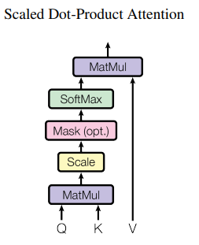
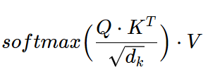
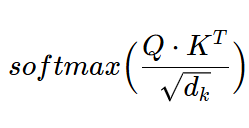

Explain Attention in Transformers as laid out in “Attention is all you need” paper?
Attention = Scaled Dot-Product Attention

Attention = 
In this, weights of each value = 
Attention is dot-product b/w \(Q\) and \(K\) normalized with \(\sqrt{d_k}\) and then applying a Softmax function to get weights on each value. Weighted sum of values completes the attention calculation.
Explain difference b/w Self-Attention vs Cross-Attention
Attention mechanism is central to the success of Transformer models. Broadly speaking, attention enable the model to selectively focus on different parts of the input sequence.
In context of Transformer model proposed in “Attention is all you need”
Self-Attention - present in both Encoder and Decoder - allows the model to weigh the importance of each element in the single sequence to compute its own representation. - capture long-range dependencies and contextual information within the same sequence
—– Self-Attention in “Attention is all you need” ——
For Encoder: In a self-attention layer all of the keys, values and queries come from the same place, in this case, the output of the previous layer in the encoder. Each position in the encoder can attend to all positions in the previous layer of the encoder.
For Decoder: Self-attention layers in the decoder allow each position in the decoder to attend to all positions in the decoder up to and including that position. We need to prevent leftward information flow in the decoder to preserve the auto-regressive property. We implement this inside of scaled dot-product attention by masking out (setting to −∞) all values in the input of the softmax which correspond to illegal connections.
Cross-Attention - present only in Decoder - enables the model to attend to different parts of the input sequence while generating the output - enables interaction b/w input and output sequences. - In other words, allows the model to consider the relevant context from the encoder’s output during the generation of each element in the output sequence.
—– Cross-Attention in “Attention is all you need” ——
Queries come from the previous decoder layer, and the memory keys and values come from the output of the encoder. This allows every position in the decoder to attend over all positions in the input sequence.
Why is Cross-Attention important?
- Helpful in scenarios where information required to generate an element in output sequence is spread across the input sequence
- For example, in language translation, understanding the meaning of a word in the target language may require considering the multiple words in the input language sentence.
- Cross-attention allows the model to selectively attend to relevant parts of the source sequence during the generation process, generating meaningful translations.
How does Transformer parallelize computation?
OR
How does Transformer avoid recurrence and convolutions?
It processes entire word sequence (or image patches) parallely. Transformers use the concept of Attention to consider all elements in the input sequence simultaneously, avoiding recurrence.
Why RNNs are slow or sequential?
In RNN or LSTMs, hidden stare \(h_t\) is a function of \(h_{t-1}\) and input at \(t\). This sequential nature precludes parallelization.
Why RNNs fails to capture long-term dependencies? How Transformers solved this?
- One key factor affecting the ability to learn such dependencies is the length of the paths forward and backward signals have to traverse in the network. The shorter these paths between any combination of positions in the input and output sequences, the easier it is to learn long-range dependencies
- As mentioned above, \(h_t\) = func( \(h_{t-1}\) and \(x_t\)) in RNNs.
- This means in a sequential network impact of \(h_{10}\) on \(h_{11}\) will definitely be more than \(h_{2}\). Due to this nature where dependency of two elements is dependent upon the distance between them + vanishing gradient problem, RNNs fail for long-contexts.
- Transformers solve this by processing the entire sequence simultaneously, disregarding the distance between two elements (by using attention mechanism to draw global dependencies).
- a self-attention layer connects all positions with a constant number of sequentially executed operations, whereas a recurrent layer requires O(n) sequential operations.
How does Transformer enable capturing long-term dependencies?
Using Residual connections, Layer Norm - mitigating vanishing gradient problem. Procesing the entire sequence in parallel and using concept of self-attention to capture interaction of all elements of input sequence with one another. Reduces the path b/w first and last element of a sequence to O(1)
What is the problem with convolution that Transformer solved?
OR
Why Transformers is better than CNNs?
The problem with convolution is similar to that of recurrence or sequential nature of RNNs. Think from the perspective of convolutions in CNN. 2 things:
- COnvolutional layers in start of the CNN capture very basic details like edges, etc. from a very small local portion of the image but conv layers towards the end of a CNN captures information regarding complex shapes (features) spread over a large portion of image area.
- If we want to increase the receptive field, we need to add more layers and with more layers, the receptive field increases as we add more layers.
Both of these implies that in convolutional neural networks, the number of operations required to relate signals from two arbitrary input or output positions increase as distance between them increases. (This is similar to RNN where impact of \(h_{10}\) on \(h_{11}\) will definitely be more than \(h_{2}\)). This makes convolution and recurrence both unable to learn long-term dependency aka global context.
Basically, in convolutional or recurrent models relation between two tokens depends on their distance (linearly/logarithmically). Transformers use self-attention, which lets every token directly attend to every other token — no matter how far apart. This means relating any two positions takes O(1) operations in terms of sequence distance — it’s distance-independent.
Benefit of Transformer over previous sequence based methods
- Can handle variable-length sequences
- Parallelizability, meaning more computationally efficient
- Shorter training times
- Capability to capture long-term context
Explain Encoder-Decoder Structure in Transformers
Encoder - responsible for processing input sequence - stack of six identical layers where each layer had 2 sublayers - Multi-Head Self-Attention - FFN - LayerNorm + Residual connection around each sublayer - Encoder creates context-rich representation of input sequence
Decoder - responsible for generating output sequence based on encoded information - stack of six identical layers where each layer had 2 sublayers - Masked Multi-Head Self-Attention - Cross-Attention (aka Multi-Head Attention on output of encoder stack) - FFN - LayerNorm + Residual connection around each sublayer - Decoder processes the output sequence step by step, attending to different parts of the input sequence as needed.
Note: Though individual layers (either in Encoder or Decoder) were identical in terms of architecture but the weights were not shared across those layers.
Role of FFN in Decoder or Encoder
LayerNorm vs BatchNorm in Transformers?
In NLP tasks, the sentence length often varies – thus, if using batchnorm, it would be uncertain what would be the appropriate normalization constant (the total number of elements to divide by during normalization) to use. Different batches would have different normalization constants which leads to instability during the course of training.
In LayerNorm, for a (B, T, C) tensor, the mean and variance is computed across the channel/embedding (C) dimension for each position (T) and for each sample in batch (B). This results in (B * T) different means and variances. The normalization is applied independently to each sample across all the channels/embeddings (C). RMSNorm operates similarly to LayerNorm but only computes the root mean square (RMS) across the channel/embedding (C) dimension for each position (T) and for each sample in batch (B). This results in (B * T) different RMS values. The normalization is applied by dividing each sample’s activations by its RMS value, without subtracting the mean, making it computationally more efficient than LayerNorm.
Since BatchNorm computes the mean and variance across the batch dimension and depends on batch size, it is not used in transformers due to variable sequence lengths in NLP. It requires storing the running mean and variance for each feature, which is memory-intensive for large models. Also, during distributed training, batch statistics need to be synced across multiple GPUs. LayerNorm is preferred not just in NLP but even in vision based transformers because it normalizes each sample independently, making it invariant to sequence length and batch size. RMSNorm operates in a very similar manner to LayerNorm but is more computationally efficient (since, unlike LayerNorm, mean subtraction is not performed and only RMS values are calculated) and can potentially lead to quicker convergence during training.
Why multiple layers were stacked? Why not use single large layer?
Stacking allows model to learn heirarchical features. Lower layers capturing local information and higher layers capturing more abstract and global information.
Q: What is Dot-Product Attention vs Scaled Dot-Product Attention?
Dot-Product Attention is commonly called multiplicative attention. It is identical to Scaled Dot-product attention explained above except that it does not peform scaling with \(\sqrt{d_k}\). In such cases, what happens is that for large dimension \(d_k\) values, the dot products grow large in magnitude, pushing the softmax function into regions where it has extremely small gradients. To counteract this effect, they scaled the dot products by \(1/\sqrt{d_k}\)
Explain what is Multi-Head Self-Attention?
OR
Why multi-head and why not single-head Attention was/is used?
- In Attention mechanism, each token’s new representation is a weighted average of all other tokens’ representations.
- This averaging blurs the fine-grained differences between individual token positions — i.e., “resolution” is reduced. (Think of it like blurring a high-res image by averaging pixel values — you get a smoother result, but lose detail.)
- To address this blurring/reduced resolution, the Transformer uses Multi-Head Attention.
- Instead of computing a single attention, it computes multiple attention mechanisms in parallel, each with different parameter sets. This allows the model to capture diverse types of dependencies (e.g., short-range, long-range, syntactic, semantic), and combine them — restoring fine-grained details.
- In other words, “Multi-head attention allows the model to jointly attend to information from different representation subspaces at different positions. With a single attention head, averaging inhibits this”
- Moreover, due to the reduced dimension of each head, the total computational cost is similar to that of single-head attention with full dimensionality. In other words, total computational cost with single head is same as multi-head (because we reduce the dimension of each head) and end up learning more and better features for the input.
Why Positional Encoding?
Since the Transformer model when processing a sequence contains no recurrence and no convolution, in order for the model to make use of the order of the sequence, we must inject some information about the relative or absolute position of the tokens in the sequence. - To this end, authors added “positional encodings” to the input embeddings at the bottoms of the encoder and decoder stacks.
Why Sine/ Cosine Positional Encoding?
- Because for any fixed offset k, \(PE_{pos+k}\) can be represented as a linear function of \(PE_{pos}\) .
- sin/cos functions are shift-invariant — you can express sin(pos + k) as a linear combination of sin(pos) and cos(pos). That’s why it’s easier for the model to learn relative positions even though it’s only given absolute positions.
- sin(pos+k)=sin(pos)cos(k)+cos(pos)sin(k)
- These frequencies form a geometric progression — i.e., they change exponentially.
- Small i = long wavelength (slow variation → global info)
- Large i = short wavelength (fast variation → local info)
Why fixed (i.e. sine/cosine) and not a learned positional Encoding?
- sinusodial positional encoding may allow for extrapolation when we encounter sequence of lengths greater than those encountered during training
Do we use masking only for Decoder?
- No. Masking can also be used for encoder.
- For example: when processing multiple sentences of unequal length in batches then, it is common to use a
[PAD]token. Here, to avoid attention to unnecessary padding tokens, we can use masking. 'i hate this so much! [PAD] [PAD] [PAD] [PAD] [PAD] [PAD] [PAD] [PAD]'is different from'i hate this so much!'. In order to force NN to treat both as same, we provide masking to pad tokens.- (Reference: HF NLP course Ch-2, Handling multiple sequences)
What is the role of CLS token?
- A special token that marks the beginning of the sentence.
- It can be used for encoders
- It can be used in decoders where we can make CLS token the default token during the start of generation process.
Loss for training Transformers?
Loss for training a multi-modal model like SAM?
SAM
Usually input to model is a batch but how Transformers handle variable input sequence size?
Strategies/Methods to both pretrain and finetune LLMs/ VLMs/Image Models
Multi-task learnig? Why we do that?
Why multiple losses?
Practices for xAI in multi-modal model?
How to tackle memory constraints in Transformers? (Amii)
Difference between transduction and induction problems
Examples of:
Transduction problems - language modeling and machine translation
Induction problems -
GPT vs BERT vs BART
Resources
- https://medium.com/@abhinavbhartigoml/unraveling-transformers-a-deep-dive-into-self-attention-and-3e37dc875bea